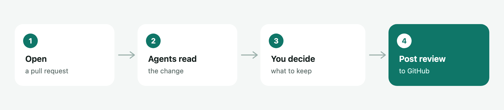
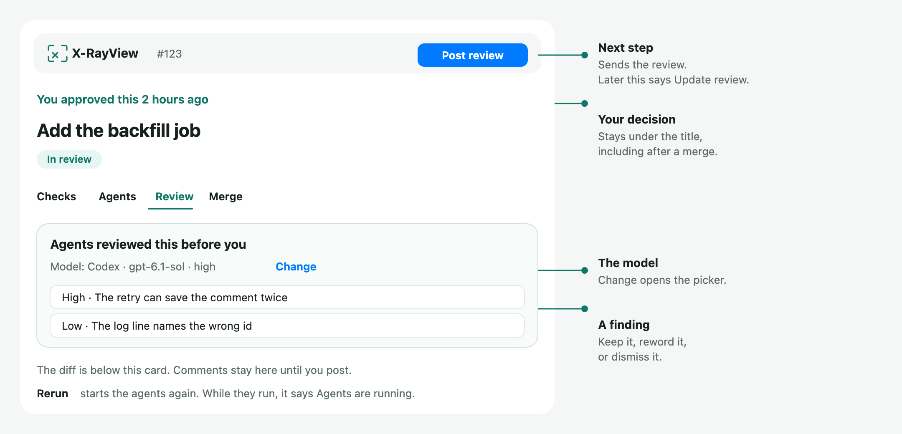

X-RayView
X-RayView reviews a GitHub pull request inside VS Code or Cursor. Agents on your computer read the change. You keep the findings you agree with, then you post the review. Nothing goes to GitHub until you press Post now, unless Post all findings when finished is checked beside Run.
This guide is also on the web: xanadupia.github.io/xrayviewer.

Start here
You need:
- VS Code 1.95 or later, or Cursor
- GitHub CLI, signed in:
gh auth login(cli.github.com) - git
- One program that can run the agents: Cursor Agent, Claude Code, Codex, or Pi
Install X-RayView from the Extensions view. The id is aliqaryan.xrayview. Cursor installs it from Open VSX. VS Code installs it from the Visual Studio Marketplace. Reload the window when the editor asks.
Then:
- Click the X-RayView icon in the activity bar.
- Run X-RayView: Choose Agent Harnesses… and pick Cursor, Claude Code, Codex, or Pi, then a model. Claude Code, Codex, and Pi also ask for a level.
- Open a pull request and press Run.
If the sidebar stays empty, run gh auth login, then Refresh.
Automatic runs are on. About two minutes after the first start, agents begin on pull requests that request your review by name. Turn off xrayview.agents.autoRun before that if you want to press Run yourself.
The review page

| What you see | What it means |
|---|---|
| Post review | You have not posted yet. Opens a preview, then Post now sends it. |
| Update review | You already posted. The button is no longer filled in. It sends another review. |
| The line under the title | What you did, such as "You approved this 2 hours ago". It stays there after the pull request is merged. |
| Change | Opens the model picker. The line next to it is the model that already ran. |
| Run agents / Rerun | Runs the agents. While they run, the button says Agents are running, and clicking it shows what each agent is doing. |
| Post all findings when finished | The checkbox beside Run. Check it, then run the agents with Run. When that run finishes, every open finding is added as its suggested comment and the review is posted to the pull request. It posts as comments. It does not approve or request changes. Uncheck it before the run finishes to keep the findings here. A run that starts on its own is left for you to post. |
| The arrow beside it | Opens Choose model…, with what the agents will run on under it, such as Codex · gpt-6-astra · medium, and Agent activity…. Both are there before and after a run, and while the agents run. |
| A finding | Keep it, reword it, or dismiss it. Only what you post is visible to the author. |
| Add all N to my review | Under the briefing's findings list, and as Add all N on each finding. Adds every open finding at once, each as its suggested comment on its line, at its level. Undo in the message takes them all back out. Edit or delete any of them before you post. |
Comments stay on this computer until you post them.
Every comment has a level, High, Medium, or Low. On GitHub it opens the comment as a colored priority tag, as Greptile's comments do: P1 for High, P2 for Medium, P3 for Low. Pick it under the kind of comment when you write one.
| Comment | Level it starts at |
|---|---|
| From an agent finding | The finding's severity |
| Blocking | High |
| Suggestion, question, or a plain comment | Medium |
| Nit or praise | Low |
Replies post as written, since the thread's first comment has the level. When X-RayView reads a pull request, its own P1, P2, and P3 tags and Greptile's P0 and P1 (High) and P2 (Medium) show as the level on each thread.
Pick a model
Run agents runs every agent that's on, together. The picker only changes and saves which CLI and model each one uses. It never starts a run.
Choose model… under the arrow beside Run agents opens the picker. Change on the model line and Choose Agent Harnesses… open it too. It has two parts:
| Part | What it does |
|---|---|
| Change all agents | Cursor Agent, Codex, and Claude Code, plus Pi when it's installed. Each says how many agents use it. Pick one, then a model, and every agent moves to it. |
| Change one agent | Guide, Architecture, Correctness, Test, and Security, each with its CLI, model, and what it looks at. Pick one to move only that agent. |
- Cursor lists the models on your Cursor account. The first row keeps whatever
cursor-agentused last. Pick a model by name if you care which one reviews. - Codex lists the models that CLI provides, then a reasoning level such as medium or high.
- Claude Code lists its models with their versions, such as Opus 5.5 and Sonnet 5.5, then an effort level from low to max. Each row is Claude Code's short name, such as
opus, so it moves to the newest version when Claude Code updates. To keep one version, setxrayview.claude.modelto its full id, such asclaude-opus-5-5. - Pi lists the models it is signed in to, then a thinking level.
For Codex and Claude Code, Change installed version… at the bottom of the model list picks another installed copy, or installs one.
After you pick, X-RayView saves the choice and says so in a short note, such as "Saved. The architecture agent will use Claude Code with Opus 5.5 at high effort. Run agents starts all 5 agents together." Press Run agents when you're ready.
An agent you move on its own offers the same choice: Cursor Agent, Codex, or Claude Code, then a model. Its instructions stay as they are, and a model saved on that agent wins over the one for all agents.
What runs by itself
Agents start on their own only when a pull request requests your review by name, when it opens and after each push. A two-minute pause folds a burst of pushes into one run. Drafts are skipped. Each pull request gets at most five automatic runs. A pull request over 100 files or 5,000 changed lines waits until you press Run.
If the pull request is already approved, X-RayView asks once per push: Skip this PR, Run anyway, or Always skip approved.
With several windows open, one window starts the automatic runs. A pull request's agents run in one window at a time. The others say they are running in another window.
If something looks wrong
- The sidebar is empty. Run
gh auth status, thengh auth login. Team requests and code owners also needgh auth refresh -s read:org. - An agent program is not found. Choose Agent Harnesses… says so, and can install Codex or Claude Code. Or set
xrayview.cursor.path,xrayview.claude.path,xrayview.codex.path, orxrayview.pi.pathto the full path. Sign in by running that program once. For Cursor:cursor-agent login. - Cursor cannot use a model. Open Choose model… beside Run agents, or Choose Agent Harnesses…, and pick a model from the list.
- Agents fail or find nothing. X-RayView: Show Agent Log lists the agents, errors, tokens, and cost.
- Agents are running in another window. Stop them there, or wait.
- A link does nothing. Use
cursor://aliqaryan.xrayview/...in Cursor andvscode://aliqaryan.xrayview/...in VS Code. Pasting the GitHub URL into Open a Pull Request… works in either editor.
What the sidebar shows
A pull request appears in the first group it fits.
| Group | What is in it |
|---|---|
| Review requested from you | Your review is requested by name. Automatic runs use this group only. |
| Assigned to you | You are an assignee. |
| You reviewed | Still open, not yours, and you have reviewed it. |
| You're a code owner | It changes files you or a team of yours own. |
| Your teams' requests | A review is requested from one of your teams. |
| Your pull requests | You opened it. |
| Watched | Open pull requests in repositories you list. |
| Opened here | Opened from Open a Pull Request… or a link. |
| Others you could review | Up to 10 more open pull requests in those repositories. |
| Recently merged or closed | Ones you reviewed or wrote, for the last 3 days. |
The icon on a row is the pull request: green is open, a draft icon is a draft, purple is merged, and red is closed. The colored dot beside it is the risk: green is low, orange is medium, and red is high. The full score is in the row's tooltip. While agents are running, the icon is a spinner.
Each row also says where X-RayView's review stands, right after the pull request's state:
| Row says | What it means |
|---|---|
| ✓ reviewed, 13 findings | The agents reviewed the latest commit. |
| reviewed, new commits | The agents reviewed an older commit. Rerun reviews the latest. |
| not reviewed | The agents haven't reviewed it yet. |
| reviewing 2/5, review queued | A review is running or waiting to start. |
| review failed | The last review failed. The tooltip has the error. |
The tooltip says it in full on its X-RayView line, such as "Reviewed a9dca66 3 hours ago: 13 findings." On the review page, the same state is a pill beside the risk score, such as X-RayView reviewed · 13 findings or X-RayView reviewing · 2/5. Click it to open Agent activity.
The view menu groups by relationship, repository, or author. Filter… is one checklist. My pull requests shows only ones you opened. Each of status and author has its own All. Check any of the rest, then press Return. The list only contains the pull requests it has already loaded, including recently merged and closed ones.
The agents
Five agents ship. The guide checks the description, sets a reading order, and draws the flow. Architecture, correctness, tests, and security look for problems. You can add more with X-RayView: New Agent….
On Claude Code, the agents that look for problems hand over to Claude Code's own /code-review. It runs once, at the effort level you picked, and its findings show under one Code review agent. Then Claude Code checks the pull request against the instructions of each agent it replaced, such as Architecture. A problem in those instructions that /code-review missed shows under that agent, within its own max findings, minimum confidence, and skipped files. In Agent activity, those agents sit under Code review agent and show its status, such as "Covered by Code review agent · In progress". The guide keeps its own instructions, and agents on Cursor, Codex, or Pi run as usual. /code-review reads the diff with git in Claude Code's sandbox, which writes nothing and reads only the checkout and its git history. X-RayView: Show Agent Log has its report.
To watch the agents work, click Agents are running, or open the arrow beside Run agents and choose Agent activity…. The agents are listed the way GitHub lists a pull request's checks: a line that sums them up, such as "1 failing, 1 in progress, 2 successful agents", then each agent under its status with its harness, model, and time. Click an agent's name, or open its ⋯ menu and choose View details, to see its log. All agents goes back. In the log, what the agent says stands as text, and the commands, reads, and searches between those messages fold into one line, such as "Ran 2 commands, read cart.js". Open that line for each step, and open a command for its output. The activity stays after the run until the next one. Pi reports its work when it finishes, so its steps don't show.
The first run writes ~/.xrayview (XRAYVIEW_HOME moves it): agents.yml for the list, and one instruction file per agent. Customize Agents… opens those files. Changes apply on the next run.
What leaves this computer
Stays here: drafts, agent results, run logs, and ~/.xrayview. The review page does not load remote images, fonts, or scripts. There is no telemetry.
Leaves:
- GitHub, through
ghandgit. The only write is Post now: your review, then any replies and thread resolutions you queued. - The model provider, through the program you picked. Agents send the diff, the title, the description, the review threads, and the files they read.
Agents do not post to GitHub by themselves. A pull request's own Cursor hooks, rules, and AGENTS.md do not run. Your own ~/.cursor rules still apply. Before posting, X-RayView refuses a review that looks like it contains a private key or token.
X-RayView adds no charge of its own. Usage counts against the account of the program that ran.
Commands
| Command | What it does |
|---|---|
| Open a Pull Request… | Open a review from a GitHub link or owner/name and a number. |
| Choose Agent Harnesses… | Pick Cursor, Claude Code, Codex, or Pi, then a model. |
| Run Agents / Stop Agents | Start or stop the agents. |
| Show Agent Log | Tokens, cost, errors. |
| Customize Agents… | Open the agent files. |
| Copy Agent Review as Markdown | Copy the findings for another agent. It includes code. Paste it only where that code may go. |
| Copy Link to This Review | Copy an aliqaryan.xrayview link. |
| Show Review Metrics / Delete Review Metrics | A local log of reviews you posted. It is never uploaded. |
Open a Pull Request… is ⌥⇧⌘P on macOS and Ctrl+Shift+Alt+P on Windows and Linux.
Settings
| Setting | Default | What it does |
|---|---|---|
xrayview.harness | claude | Default program: claude, codex, pi, or cursor |
xrayview.cursor.path / .model / .extraArgs | cursor-agent / empty / none | Cursor Agent CLI and model |
xrayview.claude.path / .model / .extraArgs | claude / sonnet / none | Claude Code |
xrayview.codex.path / .model / .extraArgs | codex / empty / none | Codex. Empty model uses the CLI's default |
xrayview.pi.path / .model / .thinking / .extraArgs | pi / empty / empty / none | Pi. Model looks like provider/id |
xrayview.agents.autoRun | on | Automatic runs when your review is requested by name |
xrayview.agents.enabled | empty | Only these agent ids. Empty runs every enabled agent |
xrayview.agents.maxParallel | 5 | Agent processes at once |
xrayview.agents.quietPeriodSeconds | 120 | Wait after a push before an automatic run |
xrayview.agents.maxAutomaticRuns | 5 | Automatic runs per pull request |
xrayview.agents.skipDrafts | on | No automatic runs on drafts |
xrayview.agents.autoRunMaxFiles / autoRunMaxLines | 100 / 5000 | Larger pull requests wait for Run |
xrayview.agents.approvedPullRequests | ask | ask, skip, or run |
xrayview.agents.timeoutMinutes | 20 | Stop an agent that runs longer |
xrayview.watch.repositories | none | Also list open pull requests in these owner/name repositories |
xrayview.watch.pollSeconds | 60 | How often to check GitHub. At least 15 |
xrayview.watch.recentlyClosedDays | 3 | How long merged or closed pull requests stay listed. 0 hides them |
xrayview.sidebar.groupBy | relationship | relationship, repository, or author |
xrayview.sidebar.mine | off | Only pull requests you opened |
xrayview.sidebar.author | empty | GitHub logins to show. Empty shows everyone |
xrayview.sidebar.status | empty | Statuses to show: open, draft, merged, closed. Empty shows all of them |
xrayview.sidebar.sortBy | risk | risk, created, or updated |
xrayview.metrics.enabled | on | Record the local metrics log |
xrayview.clones | none | "owner/name": "/path/to/clone" |
The other xrayview.watch.* switches turn each sidebar group on or off. They are on by default.
Comments that span several lines, file-level comments, and editing a comment after it is posted are not supported yet.
License
MIT. Copyright (c) 2026 Ali Qaryan.